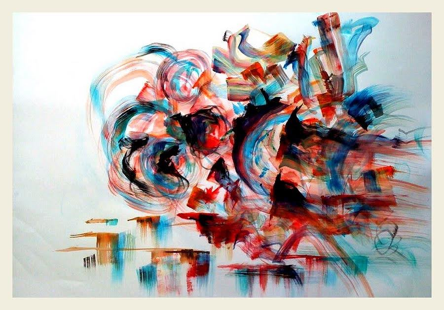

|

Art Description:
The modern machines attempt at making the realm of digital paintings more independent and immune to control, so in a few years, you will not need humans to control the work, but just the machines doing the service themselves.
The different types of dynamic paintings include music,
visual arts, software art, architecture, and literature. Music and art have always complemented each other.
|
|